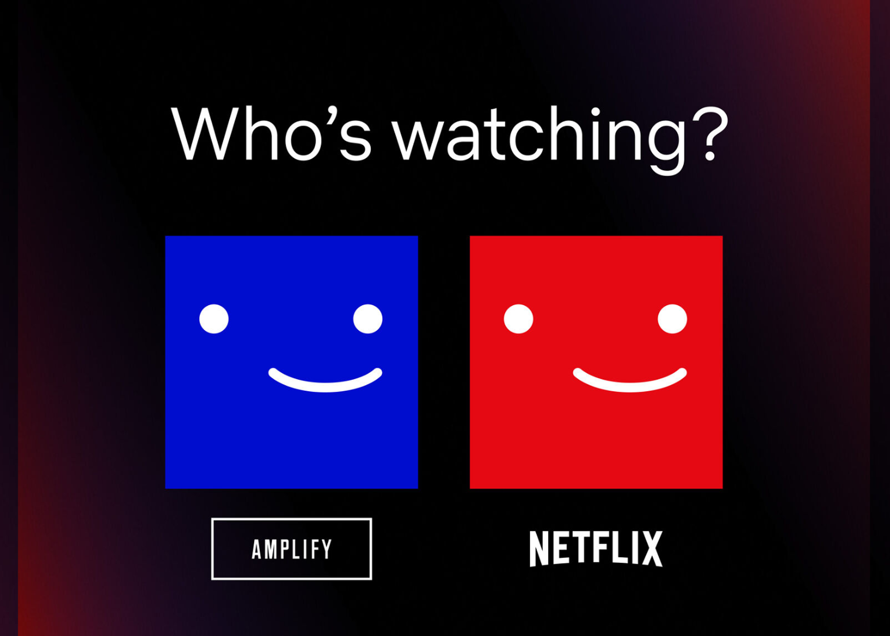

Hi! My name is Xena, and I’m a high school junior living in Oceanside. I’ve always loved doing things that lets me be creative, but that also uses technology and figuring out how things work. Web design and graphic design bring those two worlds together, and for me, that’s what makes them so exciting. I like building websites that are clear, simple, and easy for people to use while still being fun to look at. Over time, I’ve realized that design isn’t just about colors and fonts—it’s also about structure, accessibility, and making sure that everyone who visits a site feels comfortable navigating it. Each project I take on, teaches me something new, whether it’s about organizing content, experimenting with layouts, or improving the small details that make a site stand out. This website is my space to share what I’ve learned, to practice, and to keep growing my skills as I continue exploring the creative side of technology.
When I’m away from the computer and school, I love spending my time traveling and discovering new places. Traveling has always been one of my favorite things because every trip feels like a new adventure and brings me different experiences to learn from. Even something as simple as visiting a new city or trying out a local restaurant feels exciting and inspiring. I also believe that food is a big part of the adventure—whether it’s something completely new or just a familiar comfort dish, I enjoy exploring through flavor. My favorite, though, will always be chocolate. Chocolate ice cream, chocolate cake, chocolate-anything—it never gets old! These kinds of experiences not only make life more enjoyable but also spark my creativity. I notice designs and patterns everywhere I go, from street signs to menus to architecture, and sometimes they inspire me to bring new ideas into my projects.
Of course, I also like to have my downtime where I can just relax. A lot of the time, you’ll find me watching Netflix or Disney+, usually with some snacks close by, because that makes everything better. I also spend a lot of time listening to music, which keeps me inspired and helps me recharge. Music is a big part of how I stay creative—it helps me focus, sets the mood when I’m working, and sometimes even gives me ideas for projects. I also love dogs. I grew up surrounded by cute puppies and I really appreciate how it just lightens up the mood anytime.
For this "About Me" page, I structured it with a title text and then the main content. The content is a three paragraph of my interests, hobbies, and a piece of what I want to do with this skill in the future. I added pictures and made it so that it alternates left-right next to my text. Each of the pictures have a width of 200, they are floating(left or right), border-radius, and border weight and color. I added the pictures using the the image element with a source attribute. Then, I added an embedded video from YouTube using the iframe tag and added mute=1, so that when it plays it is muted. The video has a width of "300" and height of "169" and styled the same way as the images. I also added an external link to a website about adopting dogs thst opens in a new window.
Learning web design so far has been such a fun and rewarding journey, and I’m excited to keep pushing myself, trying new things, and improving with each step. In the future, I want to use what I’ve learned not just for school projects but also as a side job or creative outlet, because it’s something I genuinely enjoy. This website is just one piece of that journey, and I hope you enjoy exploring it. If you’d like to share feedback, ask questions, or just say hi, I’d be happy to hear from you!
 When I’m away from the computer and school, I love spending my time traveling and discovering new places. Traveling has always been one of my favorite things because every trip feels like a new adventure and brings me different experiences to learn from. Even something as simple as visiting a new city or trying out a local restaurant feels exciting and inspiring. I also believe that food is a big part of the adventure—whether it’s something completely new or just a familiar comfort dish, I enjoy exploring through flavor. My favorite, though, will always be chocolate. Chocolate ice cream, chocolate cake, chocolate-anything—it never gets old! These kinds of experiences not only make life more enjoyable but also spark my creativity. I notice designs and patterns everywhere I go, from street signs to menus to architecture, and sometimes they inspire me to bring new ideas into my projects.
When I’m away from the computer and school, I love spending my time traveling and discovering new places. Traveling has always been one of my favorite things because every trip feels like a new adventure and brings me different experiences to learn from. Even something as simple as visiting a new city or trying out a local restaurant feels exciting and inspiring. I also believe that food is a big part of the adventure—whether it’s something completely new or just a familiar comfort dish, I enjoy exploring through flavor. My favorite, though, will always be chocolate. Chocolate ice cream, chocolate cake, chocolate-anything—it never gets old! These kinds of experiences not only make life more enjoyable but also spark my creativity. I notice designs and patterns everywhere I go, from street signs to menus to architecture, and sometimes they inspire me to bring new ideas into my projects.